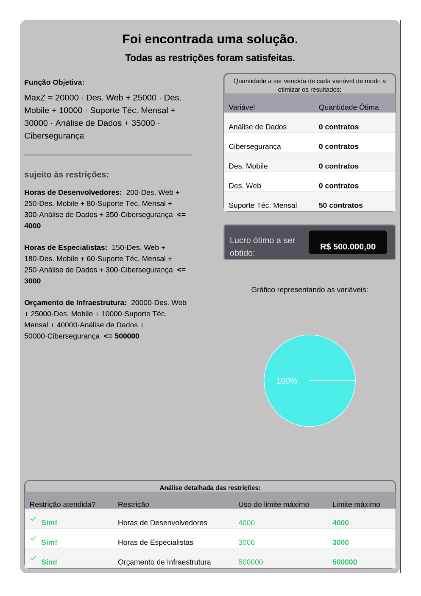

Technopti¶
Sistema web para modelagem e resolução de problemas de Programação Linear. O usuário cadastra variáveis e restrições em um fluxo guiado; o backend monta o modelo matemático, resolve com PuLP/CBC e devolve o resultado com relatório em PDF.
Acesso rápido¶
-
Apresentação
Roteiro solo de 5 a 7 minutos, PDF de 5 páginas A4, checklist, plano B e blocos para o exercício, o Solver da planilha e o cronograma.
-
Como executar
Suba backend e frontend com um comando no Linux, macOS ou Windows, ou siga o passo a passo manual.
-
Frontend
React 19, Vite, Chakra UI e o fluxo de quatro etapas até o resultado.
-
Backend e banco
Flask, SQLAlchemy, SQLite, PuLP/CBC e o ciclo de vida de cada requisição.
-
API REST
Endpoints para criar, listar, resolver, consultar resultado e excluir problemas.
-
Documentação em PDF
Documentação técnica, roteiro e relatório oficial para consulta offline.
-
Documentação (MkDocs)
Como editar, servir, validar e publicar este site com MkDocs Material.
Situação atual da demonstração¶
Ambiente pronto
- Frontend: http://127.0.0.1:5173
- Backend: http://127.0.0.1:5000/problems
- Documentação: http://127.0.0.1:8000
- Banco: problema oficial “Maximização da Empresa de TI” com resultado salvo.
- Relatório oficial: 50 contratos de Suporte Técnico Mensal; lucro de R$ 500.000.
| Item | Valor |
|---|---|
| Problemas no banco | 1 |
| Variáveis de decisão | 5 |
| Restrições | 3 |
| Coeficientes de restrição | 15 |
| Resultados salvos | 1 |
Resultado oficial¶
O modelo oficial escolhe 50 contratos de Suporte Técnico Mensal e não utiliza os demais serviços. As três restrições ficam exatamente no limite:
| Restrição | Uso | Limite | Folga |
|---|---|---|---|
| Horas de Desenvolvedores | 4.000 | 4.000 | 0 |
| Horas de Especialistas | 3.000 | 3.000 | 0 |
| Orçamento de Infraestrutura | R$ 500.000 | R$ 500.000 | 0 |
O motivo é o retorno por hora escassa: R$ 125/h de desenvolvimento para o Suporte Técnico Mensal, contra R$ 100/h dos demais serviços.

Tecnologias¶
| Camada | Tecnologias |
|---|---|
| Frontend | React 19, Vite, Chakra UI, Axios, Recharts, html2pdf.js |
| Backend | Python, Flask, Flask-CORS, SQLAlchemy |
| Otimização | PuLP com solver CBC |
| Banco | SQLite |
| Documentação | MkDocs Material |
Documentação do projeto¶
- Apresentação solo — arquivos oficiais e roteiro.
- Roteiro em texto — roteiro completo para editar.
- Documentação em PDF — PDFs e materiais para download.
- Projeto — contexto, arquitetura e fluxo funcional.
- Como executar — scripts, comandos e solução de problemas.
- Frontend — telas, componentes, estado e integração com a API.
- Backend e banco — rotas, modelos, sessão e solver.
- API REST — contrato, exemplos e códigos de erro.
- Modelo matemático — formulação e resultados.
- Estrutura — pastas, banco e o que é versionado.
- Documentação (MkDocs) — como manter e publicar este site.
- CI/CD e release — GitHub Actions, releases e pacote GHCR.
- FAQ — perguntas prováveis da apresentação.